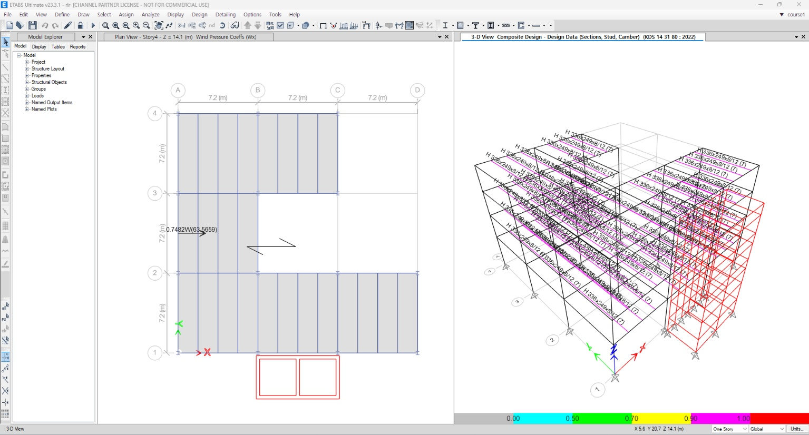
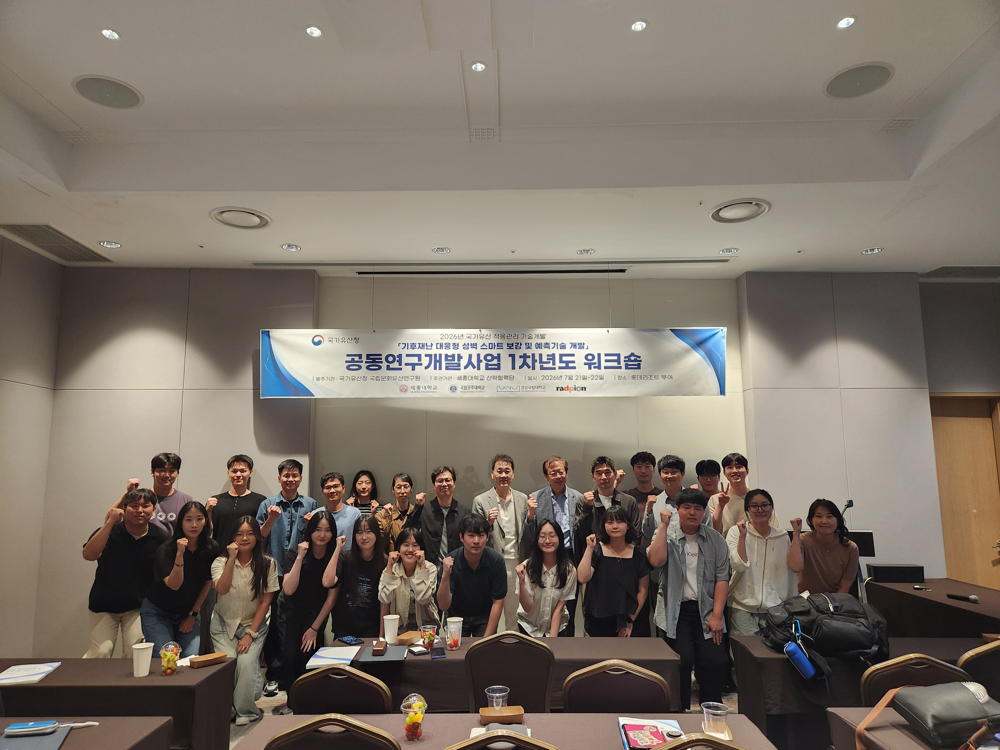
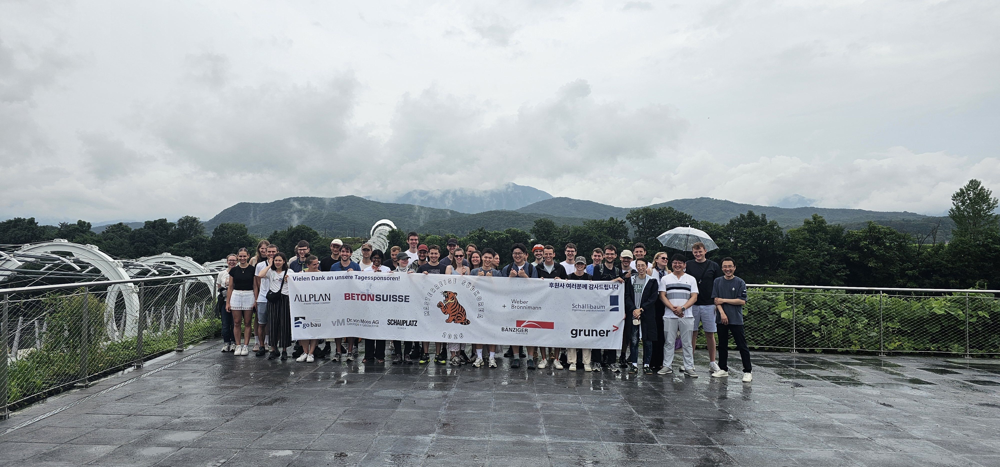
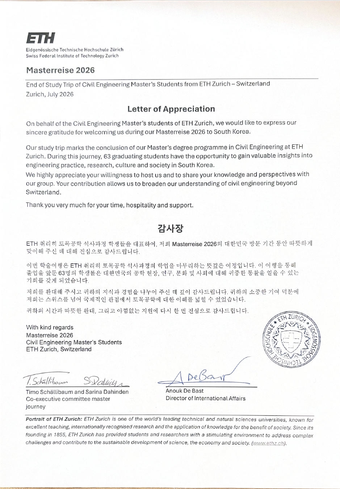

연구실 공지와 활동
2026년 8월 28일, 학부연구원들이 ETABS 사용자 교육에 참가하여 RC 및 철골 구조물 설계를 직접 수행하며 신버전의 KDS 설계 기능을 살펴보았습니다. 아울러 AI 코딩 협업을 활용한 API 자동화 사례도 함께 접해보는 시간을 가졌습니다.

2026년 7월 21일부터 22일까지 부여에서 열린 「기후재난 대응형 성벽 스마트 보강 및 예측기술 개발 워크샵」에 참가하여 연구 목표와 진행 방향을 공유하고 참여 기관들과 교류하였습니다.

2026년 7월 20일, ETH Zürich 토목공학 대학원 방문단이 학술 연수(Masterreise 2026)의 일환으로 구조 프로젝트 현장을 방문하였습니다. AISE 연구실은 협력 파트너로서 방문단과 함께 현장을 둘러보며 연구 교류의 시간을 가졌습니다.


AISE Lab이 세종대학교에 공식 출범하였습니다.